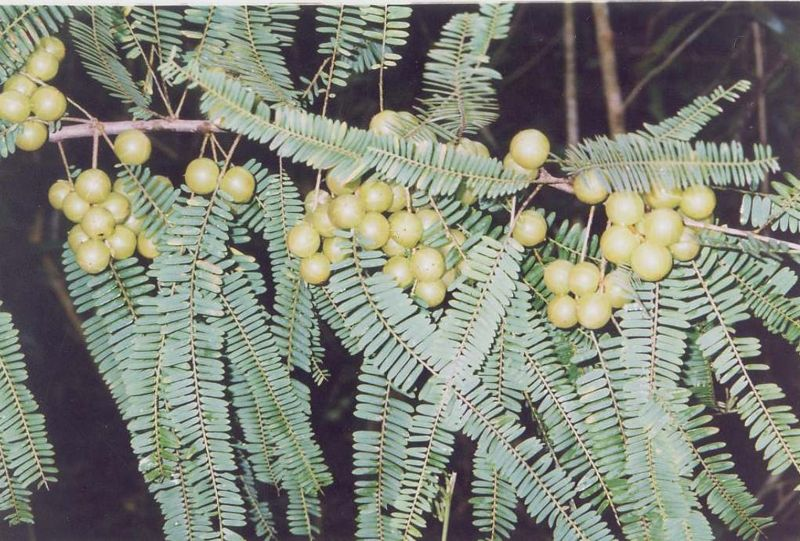

Emblica
officinalis
Gaertn.
Taxonomic
Details

----- Correct Name
----- Classification
----- Synonyms
----- Common Names
Other Biological Details
----- Habit and Habitat
----- Diagnostic Features
----- Reproductive Biology
---------- Breeding System
---------- Phenology
---------- Pollinators
---------- Seed Biology
----------Seed Germination
------ Cultivation
----- Major Pests and Diseases
Economic Potential and Uses
----- Parts Used
-----Uses
----- Harvesting Practices
----- Produce and Products
----- Chemistry
----- Processing Techniques
----- Other uses
----- Economic Potential to the
Country
----- Export Potential
Miscellaneous Information
Literature
Taxonomic
Details
Correct
Name :
Emblica officinalis Gaertn.

Family : Euphorbiaceae
Synonyms : Phylanthus emblica L.,
Cicca emblica
Common Names :
English: Indian gooseberry, Awalkante,Dhalri,Dhatri,Emblic myrobalan,
Sanskrit:Amalakee
Hindi:Amla, aonla, Amlika, Aonia, Aonwala
Bengali: Amlaki, Amalakee, Amla,
Malayalam: Nellikai, Nelli
Tamil:Nelli
Telugu: Usirikayi, Usirikai, Usiriki, Usri
Kannada: Bettadha nellikai, Adiphala,Amalaka,Amalaka
Marati: Anvla, Amla, Amli, Auli, Avala,Avla
Guj: Amla.
Oriya: Anla.
Back
to Top
Other
Biological Details
HABIT & HABITAT
Emblica officinalis
Garten., is a medium sized, deciduous tree growing to a height of 25- 33 m.
Aonla is said to be indigenous to tropical south-eastern Asia, particularly in
central and southern India. It is also reported to be the native of India, Sri
Lanka, Malaysia and China. This tree is found both wild and cultivated
throughout much of tropical Asia: central and southern India, Sri Lanka, Burma,
Malaysia, and China. It is often cultivated in gardens and home yards for its
fruit. Individual trees have been cultivated in Florida, Hawaii, the West
Indies, Cuba, Puerto Rico, Trinidad, and Panama. The tree is common in mixed
deciduous forests of India growing upto 1350m MSL on hills. Aonla is
commercially raised northern states like Uttar pradesh and Himachal pradesh.
Availability
:
Status :
Back
to Top
DIAGNOSTIC
FEATURES
Emblica officinalis
Garten., is a medium sized, deciduous tree wtih slender branchlets, feathery
foliage, with oblong leaves, clusters of small, almost inconspicuous,
greenish-yellow flowers, and round, hard, pale green or red acid fruits.
It is much appreciated both as food and medicinal crop in tropical Asia. When
virgin land is cleared, this is the one wild tree always left standing because
its fruit is so esteemed for relieving thirst. In Thailand, buses stop in the
countryside to allow passengers to dismount and pick the fruit. The tree has
potential as an important firewood crop.
Recently the demand for this fruit has created awareness among the farmers of
southern states. State forest department supplies the varieties like NA-6, NA-7,
NA-10, Krishna, Kanchan and Chakarya to the interested farmers in large scale.
Back
to Top
REPRODUCTIVE
BIOLOGY
Flowers monoecious, minute,
greenish yellow. Male flowers: combined, very numerous in the axils of the lower
leaflets. Anthers 3-5.
Female flowers: few, solitary, sessile. Ovary superior, ovate. Style scarcely
any. Stigmas 3, 2-cleft. Drupe fleshy, globular, smooth, 6-striated.
Breeding System :
Bisexual
Phenology :
The flowers commence opening from the last week of March and the blooming period
lasts for 3 weeks. Male flowers appear in clusters in the axil of leaf all over
the branch let while female flowers on the upper end of a few branch lets only.
Pollinators:
Insects,
Seed Biology :
Nut obovate, obtusely triangular, 3-celled. Seeds 2 in each cell.
Seed
Germination:
Emblica officinalis Garten., is propagated by both budding, cuttings, and
inarching. Seedlings do not come true to type. The fruits are small and of
inferior quality. Seed treatment. Treatment with hot water (80°C) for 5 minutes
ensures 80 percent germination in about 10 days. The seeds are not viable for
long. Ability to compete with weeds. It competes fairly well.
Back
to Top
MAJOR
PESTS & DISEASES
Pests:
The trees are attacked by leaf rust, ring rust, and fruit rot in India, but not
in Florida. In India, the pest Bestonsa stylophora sometimes attacks the
trees. The most serious enemy is the bark-eating caterpillar (Inderbella sp.),
which can be controlled by twice a year spraying with insecticide. Seedlings can
be destroyed by insects, rats, or squirrels.
Diseases:
Rust diseases (Ravennellia emblicae): A Brownish pustule appears both on
the leaves and fruits and finally these become dark brown to black. Affected
fruits drop before maturity. Spraying with M-45 or Indofil, M-45 @ 0.3% twice,
first in early September and second after 15 days has been proved to be
effective.
Back
to Top
Economic
Potential and Uses
Parts
used
Whole tree, Fruits, Foliage, Branches.
Uses
·
The fruits are
made into preserves (murabba), sauce, candy, dried chips, tablets, jellies,
pickles, tophies, powder, etc.
·
The
acid-tasting fruit of this species is one of the richest known natural sources
of vitamin C. Two of its fruit 2.5-4.5 cm wide. Weighing a total of 100 g,
contain nearly 12-15 times the amount found in an orange. The fruits are also
rich in pectin. They are used fresh, dried, or pickled in cooking, preserves,
relishes, and candies. Healthy trees 15 years old in
India
produce 200 kg of fruits.
·
The foliage
and fruits are relished by livestock.
Harvesting
Practices
Budded trees begin to fruit after 6 years the fruits are light green at first,
but when they mature become dull greenish yellow. Best harvesting time of Amla
fruit is February when the fruits have maximum ascorbic acid content. In south
india, fruits are found throughout the year. The mature fruits are hard and they
do not fall for gentle touch & therefore vigorous shaking is required.
Fruits can also be harvested using long Bamboo poles attached with hooks.
Yeild:
A mature 10-year-old tree will yield 50- 70 kg of fruit. The average weight of
the fruit is 60 -70 g. A well-maintained tree will be yielding up to an age of
70 yrs the yield increases year by year upto 50 years.
It is a fast-growing tree, producing 2.7 rings per 5 cm of diameter. Seedlings
that went through an unusually cold winter grew to nearly 3mts in just 2 years
in Florida. The wood from Emblica officinalis is durable even under
water, and is used for agricultural implements and for lining wells.
Produce
and Products
Fruits can be used fresh and dried as pickles, preserves and candies. Ready to
drink Juice, Aonla murabba.
Back
to Top
Chemistry
: It chemical
composition is as fallows:
|
Moisture
|
81.2
per cent
|
|
Protein
|
0.5
per cent
|
|
Fat
(ether extract)
|
0.1
per cent
|
|
Mineral
matter
|
0.7
per cent
|
|
Fibre
|
3
4 per cent
|
|
Carbohydrates
|
14.0
per cent
|
|
Calcium
|
0.05
per cent
|
|
Phosphorus
|
0.02
per cent
|
|
Iron
|
1.2
per cent
|
|
Calorific
value
|
59/100
g
|
|
VitaminB
|
30
mg/100 g
|
|
Nicotinic
acid g
|
0.2
mg/100
|
|
Vitamin
C
|
600
mg/100g
|
Back
to Top
Processing
Techniques
Back
to Top
Other
Uses
1.
Use as Firewood:
The red, close-grained wood serves as a good fuel and makes excellent charcoal.
It is dense (specific gravity, 0.7-0.8), burns with a calorific value of about
5,200 kcal per kg, and has an ash content of about 2 percent. The stems coppice
easily when the trees are cut back.
2.
Green manure:
In
India
, the branches are lopped for green manure, particularly for neutralizing
excessive soil alkalinity in betel nut and cardamom plantations.
3.
It is valued as an
antiscorbutic, diuretic, laxative, alterative and antibiotic. One or other parts
of the plant could be used in treating chronic dysentery , bronchitis, diabetes,
fever, diarrhoea, Jaundice, dyspepsia, cough and in tanning and dyeing
industries. The literature regarding its diverse medicinal, industrial and other
applications have been reviewed.
4.
The properties and
nature of inhibitors of potato virus in the plant extract, pharmacological
activities of phyllembim isolated from fruit pulp, protective effects of fruit
extract in myocardial necrosis and
antiviral activity.
5.
The wood is used for building purposes. Fruit is of much economic
importance, generally used in preparation of pickles and indigenous medicines.
Used for constructing interior types of building, furniture, agricultural
implements and in the preparation of wells. It can be tried for gunstocks. It
yields an excellent charcoal and firewood.
6.
Its fruits are largely employed in medicines both indigenous and
allopathic.
Back
to Top
Economical
Potential to the country
The 8 year old plantation will yield 20-25t fruits with a cost of production of
Rs. 34,000 per ha. The net profit from this area will be around Rs. 20,000. The
rate for a kg of fruit ranges from Rs. 15-35 depending on the season.
Back
to Top
Export
Potential
Back
to Top
Miscellaneous
Information
Species
The genus Phyllanthus
(Greek for leaf flower) comprises about 350 or even 500 species, mostly shrubs,
some herbs or trees. With the revision of the genus, Phyllanthus emblica has
been placed under Emblica as EmbUca officmalis . There are other species which
are also used for pickling etc., as Phyllanthus acidus, opularly known as
Otaheite gooseberry, star gooseberry, or country gooseberry; Emblica fischeri (syn.
Phyllanthus fischeri) and Phyllanthus longijiorus.
It was reported that
somatic number of chromosome in aonia to be 2n=28 while a variation from 2n=98
to 104.
Cultivars
There has been no
standardization of cultivars of aonia and they are mostly known on the basis of
size , colour or after the names of places. The cultivars mainly classified
according to their colour are greentinged, red-tinged, pink-tinged,
white-streaked, and Bansi Red. It has been
reported that the important cultivars grown in the district of Pratapgarh
(Uttar Pradesh) are Banarasi, Chakaiya and Pink-tinged, which can be grown
successfully under North Indian conditions.
Banarasi
Tree has upright growing habit with three branchlet per node. Fruits large in
size, flattened oblong; skin smooth, yellowish, segments raised in three parts;
flesh moderately fibrous, soft, semi-transparent. It has less number of female
flowers and has self-incompatibility, hence it is a shy bearing. The fruits
contain high amount of ascorbic acid.
Chakaiya
The tree has spreading
habit. It bears profusely and has 4.03 female flowers per branchlet. Fruits
small to medium, flattened; skin smooth, russetted, greenish in colour; flesh
fibrous and hard.
Francis
The branches have
dropping habit. Moderate in bearing. Fruits large, flattened oval; skin smooth,
greenish yellow; flesh soft, nearly fiberless and has moderate keeping quality
and is highly susceptible to fruit necrosis.
NA 4 (Krishna)
This is probably a chance
seedling ofBanarasi cultivar. The cultivar bears moderately. Fruit medium to
large in size, flattened, conical, angular, basin papillate in shape; skin
smooth, yellowish in colour with red blush on the exposed surface; flesh
fibreless, hard and semi-transparent.
NA 5 (Kanchan)
It is believed to be a
chance seedling of Chakaiya. The tree has spreading habit. It bears profusely.
Fruits small to medium, flattened oblong; skin smooth, yellowish in colour,
ideally suitable for preparation of pickles.
NA6
A seedling selection from
Francis, precocious, prolific and regular bearer, no incidence of necrosis,
ideal for preparing processed products. NAP Early maturing chance seedling from
Banarasi; fruits large, suitable for preservation. Evaluation was done for
some newly evolved aonia cultivars for their physico-chemical attributes.
It was observed that the cultivars Anand-2 followed by Anand-1 excelled over
Deshi in respect of fruit weight, stone weight, pulp/stone ratio, pulp
thickness, fruit size and number of fruits per kg weight. However, the cv. Deshi
was found superior to newly evolved cultivars in respect of chemical composition
(TSS, ascorbic acid, acidity, tannin and moisture). The fruit weight and
chemical composition of some aonia cultivars are presented in Table 2.
Soil and climate
Soil
Aonla can be grown in light as well as heavy soils except very sandy one.
However well-drained fertile loamy soil is the best. The trees are also adapted
to dry conditions and can grow in moderately alkaline soils. Cultivar variation
in salt tolerance has been reported. Aonia seedling and Chakaiya exhibited salt
tolerance upto ESP 43.5 and 35 0 and ECe 9 7 and 9.0 mmhos/cm respectively,
while Kanchan and Francis could tolerate upto ESP 35.0 and ECe 10.0 mmhos/cm.
Salinity caused excessive accumulation of Cl in leaves, while sodicity resulted
in accumulation ofNa in toxic amounts in all the cultivars.
Climate
Aonla is a subtropical
fruit but its cultivation in tropical climate is quite successful. The tree is
not much affected either by hot wind or frost, however, older trees are damaged
by frost. The young plants should be protected from hot wind during May-June and
from frost during winter, at least up to the age of 3/4 years under North Indian
conditions. The mature trees can tolerate freezing temperature as well as a
temperature as high as 46°C. The warm season appears conducive for the
initiation of floral buds. It can be grown insemi-arid, subtropical region with
an annual rainfall of 350-500 mm
Cultivation
Planting
Prior to planting, the field should be deeply ploughed, harrowed and levelled.
The pits,1 m3 should be dug during May-June at appropriate distance and filled
with surface soil mixed with 10-15 kg of decomposed farmyard manure. It has been
reported that filling of pit with normal soil + 25 kg FYM + insecticide (chloropyriphos)
for preventing termite attack resulted into maximum percentage of plant
survival, average height and trunk girth. Healthy grafts or budded plants are
planted during rainy season, preferably in early monsoon in July at a distance
of 9 m or 11 m
each way in square system. In dry areas where mortality after
transplanting is usually high, the seedling rootstocks can be raised in situ at
appropriate distance for budding with superior clone. Use of gypsum (75%) in
alka line soil (pH 9.1 and ESP 30.6) was reported to be beneficial for obtaining
maximum growth of budded plants.
Training and pruning
As the branches ofaonia trees often break off carrying heavy crop load due to
brittle nature of wood, the plant should be trained to develop a low headed one
and the main branches constituting the foundation framework should be made to
arise on the trunk within 0.75 m from the ground. The plant should be trained to
modified leader system. The framework should be developed by encouraging the
growth of four to six well spaced branches with fairly wide angle.The pruning of
the bearing plants can be done after the termination of the crop each year.
While pruning, dead, diseased, broken, weak, crossing branches and suckers
appearing from rootstock should be removed.
Irrigation
Aonla plants hardly require any irrigation during rainy season except long spell
of dry period. The young plants require watering during summer months at
fortnightly interval, particularly till they have fully established. Watering of
mature, bearing plants is also necessary from April to June at bi-weekly
interval to obtain higher fruit set and reduce fruit drop. Irrigation during
October to December at 20 days interval helps in better development of fruits.
Manuring and
fertilization
Very little is known about the manuring and fertilization ofaonia as no schedule
basedon experiments has so far appeared. In a sand culture study, Pathak et al.
(1993) diagnosed the nutrient deficiency symptoms in aonla. Concentrations of
0.85, 0.065, 0.208, 0.435, 0.205% or lower ofN, P, K, Ca and Mg respectively, in
leaves, corresponded to their deficiency symptoms.It was
observed that each tree should be given 3-4 kg superphosphate.It has been
suggested to have a schedule of fertilization, the young plant should be
given 15-20 kg of well-rotten farmyard manure and the mature tree 30-40 kg per
year during September-October. In addition, application of 30 g N for each year
of age in plant up to 10 years and afterwards 680-900 g of N/plant/year should
be provided. Every mature tree should also be fertilized with 1 kg
superphosphate and 1-1.5 kg muriate of otash. The above fertilizers should be
given in two equal split doses to mature bearing tree, once during
September-October and again during April-May after setting of fruit. The plants
need to be irrigated after fertilizer application. The dose of manure and
fertilizer, recommended by the Narendra Dev University of Agriculture &
Technology, Faizabad, UP is application of 10 kg FYM, 125 g N, 50 g P205 and 50
g K2Oper one-year-old plant. The dose should be increased every year in the same
proportion upto the age of 8 years (1000 g N, 400 g P^ and 400 g K^O/tree) after
which the ixed dose should be applied each year, in two splits during
September-October and pril-May.
As regards nutritional status, has been observed
from leaf analysis for N, P, K, Na, Ca and Mg of plants, raised in normal and
alkaline soils, that N and P were most affected by soil pH. Three months old
shoots should be sampled from the middle portion of the indeterminate shoots
during July.
Mulching
Mulching helps in conserving soil moisture, checks the weed growth, improves the
soil physical and chemical properties and adds organic matter (in case of
organic mulches). Comparison effects of different types of mulches on soil
properties in aonia orchard, it was found that use of locally available organic
mulches (paddy straw, sugarcane trash and grasses) was quite effective in
improving the soil physical properties i.e., porosity, hydraulic conductivity
and field capacity. Organic mulches were also effective in reducing the ECC, ESP
and cation contents in tree basin and in improving the organic carbon content,
available nitrogen and potassium contents. It was concluded that use of paddy
straw over a longer period as mulch needs to be popularized in aonia orchards
particularly on salt affected soils.
Intercropping
It is better to follow clean culture in aonia plantation except during the rains
when leguminous crops, viz., pea, moong, cowpea, etc., can be grown up to 8
years when the plants usually remain in non-bearing stage and their root system
and top growth are not much developed.
Back
to Top
Literature
1.John
Lindey (1981).
Flora Medica: A botanical Account of All The More Important Plants Used In
Medicine. Ajay Book Sevices,
New Delhi
. P:170.
2.Nayar,
T.S., Koshy, T.S., Satish Kumar, Mohan,N.., Mukuntha Kumar, S. (1986).
Flora Of
Tropical
Botanical Garden
, Palode.
Tropical
Botanical Garden
and Research Institute,
Trivandrum
. P: 81
3.Singh,
N. K. and Singh, D. P., 2001, Ethnobotanical Survey Of District Balrampur,
Flora And Fauna, Vol.7. No.2 pp.59-66
4.The
wealth of
India
, A Dictionary of Indian Raw Materials and Industrial Products, Vol. III.
D-E, Publications and Information Directorate, CSIR,
New Delhi
India
, 1952.
5.www.treeandseeds.com
home1.htm
Back
to Top